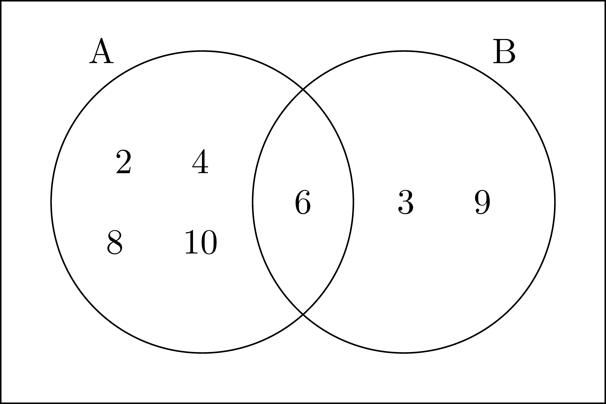

2.1 Sets and Subsets
The foundation of modern mathematics is the theory of sets. Informally, sets can be thought of as collections of objects. While set theory is not specifically outlined in the content standards of most states, it is mentioned in the Common Core standards. The first reference to set theory occurs in the Introduction to Kindergarten, stating:
Students use numbers, including written numerals, to represent quantities and to solve quantitative problems, such as counting objects in a set; counting out a given number of objects; comparing sets or numerals; and modeling simple joining and separating situations with sets of objects, or eventually with equations such as \(5 + 2 = 7\) and \(7 - 2 = 5\). (Kindergarten students should see addition and subtraction equations, and student writing of equations in kindergarten is encouraged, but it is not required.) Students choose, combine, and apply effective strategies for answering quantitative questions, including quickly recognizing the cardinalities of small sets of objects, counting and producing sets of given sizes, counting the number of objects in combined sets, or counting the number of objects that remain in a set after some are taken away. (NGA-CCSSO, 2010)
Set theory also makes an appearance in the high school standards related to counting and probability, as knowledge of sets is critical to understanding basic formulas in probability.
Related Content Standards
- (HSS.CP.1) Describe events as subsets of a sample space (the set of outcomes) using characteristics (or categories) of the outcomes, or as unions, intersections, or complements of other events (“or,” “and,” “not”).
We start our exploration of set theory by developing some basic notation and definitions. Cantor (1891) defined sets in the following way.
Unter einer ‘Menge’ verstehen wir jede Zusammenfassung \(M\) von bestimmten wohlunterschiedenen Objecten \(m\) unsrer Anschauung oder unseres Denkens (welche die `Elemente’ von \(M\) genannt werden) zu einem Ganzen. (p. 481)
By a ‘Set’ we mean each collection \(M\) of certain well-differentiated objects \(m\) of our perception or our thinking (which are called the `elements’ of \(M\)) as a whole. (English translation)
This definition proved to not be precise enough to avoid certain paradoxes.
Even though Cantor’s definition of a set leads to such paradoxes, we will use it as our working definition, with the detailed definition of set being a primitive notion in Zermelo-Fraenkel set theory. The Zermelo-Fraenkel axioms, combined with the axiom of choice, create the ZFC axioms upon which mathematics is built. Due to the level of abstraction involved in the axioms, we will not include a systematic coverage of the axioms in this text, but will reference them as needed.
Definition 2.1
We will define a set by the collection of elements which belong to the set.
If \(A\) is a set and \(a\) is an object that belongs to \(A\), we say that \(a\) is an element of \(A\) and denote it as \(a\in A\).
If an object \(a\) is not an element of a set \(A\), we denote that by \(a \notin A\).
Let \(A\) and \(B\) be sets. We say that \(A=B\) if and only if every element of \(A\) is an element of \(B\) and every element of \(B\) is an element of \(A\). (In the ZFC axioms, this is referred to as the axiom of extensionality.)
While the elements of a set are often written in a specific order, i.e. \(\{1,2,3\}\), the members of a set have no particular order and the same set could be written as \(\{3, 1, 2, 1\}\), with the repetition being irrelevant since the set is defined by its elements.
We also need to note that \(a\) and \(\{a\}\) are two different mathematical objects (one is the element \(a\) and the other is the set that contains the element \(a\)). So \(A = \{a, \{a\}\}\) defines a set with two distinct elements: \(a\) and \(\{a\}\). Likewise, if \(B=\{1, 2, 3, \{4\}, 5\}\), then \(4\notin B\) but \(\{4\}\in B\). So the symbol \(4\) is not an element of \(B\), but the symbol \(\{4\}\) (the set that contains the element \(4\)) does belong to \(B\). These nuances mean that we have to be very careful with our notation and how we read the mathematical symbols.
Another way to describe sets is using set-builder notation. In this notation, we describe our new set using larger sets and a set of restrictions on (or description of) which objects in the larger set we are choosing to include. For instance, we can define \(C\) to be the set of all real numbers (denoted \(\mathbb{R}\)) greater than or equal to \(3\). In this case, the larger set is the set of real numbers and the condition that the numbers are greater than or equal to three is the restriction or description. Of course we do not want to have to keep writing so much down, so we create a short-hand way of defining this set: \[ C = \left\{ x\in \mathbb{R} \middle \vert x\geq 3\right\}\] where the \(\vert\) separates the description of the larger set and the description of the restrictions. This notation is read “\(C\) is the set of all of the elements \(x\) in the real numbers such that \(x\) is greater than or equal to 3.” This set-builder notation is particularly useful when describing sets with more than just a few elements.
When sets are subsets of the real numbers, we can also describe them using interval notation. For the set \(C\) defined above, we can also write \[C=[3,\infty)\] where the closed bracket, \([\), denotes that the endpoint is contained in the set, while an open bracket, \((\), denotes that the endpoint is not contained in the set. For real numbers \(a\) and \(b\), with \(a<b\), we have the following options as intervals from \(a\) to \(b\): \[ (a,b) \quad (a,b] \quad [a,b) \quad [a,b] .\]
Once we have created notation for sets with a few elements and a large number of elements, we can describe how to denote a set without any elements.
In addition to determining how to describe sets, we must have a way to determine if two sets are the same or distinct.
A direct consequence of this definition is that the number of times an element is listed and the order of the elements is irrelevant for equality of sets. So \(\{a, b, c, d\}=\{b, a, c, c, d, b\}\) and \(\{1, 2\} \neq \{1, 2, 3\}\).
For example: \[\{6, 7 \} \subseteq \{5, 6, 7, 8\},\] \[\{x\in \mathbb{R} \vert x>5\} \subseteq \{x\in \mathbb{R} \vert x \geq 2\}, \mbox{ and }\] \[ \{a,b,c\} \subseteq \{a,b,c\}. \] Notice that the first two examples are proper subsets.
It is important to distinguish between the phrases ‘element of’ and ‘contained in’ when discussing sets. If \(A= \{a,b,c\}\), then we say that \(a\) is an element of \(A\), while \(\{a\}\) is contained in \(A\)
Since the empty set has no elements, it is by default a subset of every set. Similarly, every set is a subset of itself.
We often need to prove that two sets are equal to one another, and we do not have the elements of the set listed out. In these situations the following theorem often proves useful.
Proof. Since the statement of the theorem is an ‘if and only if’ statement, there are actually two components that need to be proven. We need to first prove that if \(A=B\) then \(A \subseteq B\) and \(B \subseteq A\). The second statement that needs proving is the converse: having \(A \subseteq B\) and \(B \subseteq A\) implies that \(A=B\). We will complete both arguments using the corresponding definitions.
Assume that \(A=B\). Then the definition of set equality states that every element of \(A\) is an element of \(B\). This means that \(A\) meets the definition of a subset of \(B\). That is: \(A\subseteq B\). In addition, the assumption that \(A=B\) gives us that every element of \(B\) is an element of \(A\). As a result, \(B\subseteq A\). Thus \[A=B \Rightarrow A\subseteq B \mbox{ and } B\subseteq A.\]
To prove the converse statement, we assume that \(A \subseteq B\) and \(B \subseteq A\). Thus, we have that every element of \(A\) is also an element of \(B\) and every element of \(B\) is also an element of \(A\). This is the definition of set equality and so we have that \(A=B\).
We have therefore proven both implications, and thus the theorem is proven.
2.1.1 Venn Diagrams
In order to better understand relationships between subsets of a larger set, it is sometimes helpful to represent the relationships with a Venn diagram. In these diagrams, we use circle-like figures to represent sets, with everything inside the circle being inside of the set and everything outside of the circle being outside of the set.
Example 2.3 Let \(A=\{2, 4, 6, 8, 10\}\) and \(B=\{3, 6, 9\}\). Then these sets could be represented by a Venn diagram such as the one below.

As previously discussed, sets do not have to just be composed of numbers. Moreover, sets can have many different relationships between them, as seen in Figure . If a set is a subset of a second set, then they are visualized as one region inside of the other region. If there are elements shared between two sets, but are not known to have a subset relationship, then they are visualized as overlapping regions. If no elements of the two sets are the same, then they are represented as two non-overlapping regions. In the next section we define vocabulary to describe these different types of relationships and how they are combined in different ways.
Figure 2.2: Sample Venn diagrams
2.1.2 List of Sets of Numbers
In order to help with terminology we will provide some notation for some of the basic sets used in the text.
We define the natural numbers as \[\mathbb{N}=\{0,1,2,3,4,5,\ldots\}.\] This is distinct from some definitions of the natural numbers that do not include the number \(0\). When a text defines the natural numbers without the \(0\), it also defines the whole numbers to be our definition of the natural numbers. We are including \(0\) due to the method in which we define the natural numbers in Chapter 4.
We label the integers as \[\mathbb{Z} = \{\ldots, -4, -3, -2, -1, 0, 1, 2, 3, 4, \ldots\},\] which we will define in detail in Section 4.1.
We label the set of rational numbers as \(\mathbb{Q}\) and the real numbers as \(\mathbb{R}\), the detailed definitions of which are in Sections 4.3 and 4.5, respectively.
The complex numbers, \(\mathbb{C}\), are defined and studied in Section 4.6.
For the integers, rationals and reals, we define \(\mathbb{Z}^+\), \(\mathbb{Q}^+\), and \(\mathbb{R}^+\) to be the positive elements of the set, those that are greater than zero.
We visualize the nested nature of these number systems in the Venn diagram in Figure 2.3.
Figure 2.3: Sample Venn diagrams
2.1.3 Exercises
Answer the following as true or false. If false, explain why the statement is not true.
\(\emptyset \subseteq \{f,u,n,t,i,m,e,s\}\)
\(\{a,b\} \in \{a,b,c\}\)
\(\{0 \}\ = \emptyset\)
\(\{f,u,n,f,u,n \}=\{f,u,n \}\)
\(\{0,0\} \subseteq \{0,0,1,1,2,2\}\)
Let \(A=\{1, 2, 3\}\), \(B=\{a, b, c\}\), and \(C=\{1, a, 2, b, 3, c\}\). Answer the following as true or false. If false, explain why the statement is not true.
\(A \subseteq A\)
\(A\supseteq C\)
\(A=B\)
\(A \nsubseteq B\)
Recall that for set \(A\), \(\mathcal{P}(A)\) is the power set of \(A\).
Let \(A=\{a,b\}\). Write the set of \(\mathcal{P}(A)\) by listing its elements.
Let \(A\) be a set with \(n\) elements in it.
How many elements are in \(\mathcal{P}(A)\) if \(n=3\)?
How many elements are in \(\mathcal{P}(A)\) if \(n=4\)?
How many elements are in \(\mathcal{P}(A)\) if \(n\) is an unknown natural number?
Some textbooks describe a set as ``a well-defined collection of objects’’ which means that the inclusion criteria that helps you decide what should be in the set is clearly specified. Classify each of the following sets as well-defined or not. If you identify a set as not well-defined, give two possible well-defined sets that would satisfy the original description.
\(\{x \vert x>0\}\)
The set of students at The University of Awesome who are currently enrolled in a class that has a 100-level designation.
\(\{x\vert x \textrm{ is a letter in my first name}\}\)
The set of my friends.
\(A_n=\{x\in \mathbb{Z} \vert n\leq x\leq n+3\}\)
Let \(A=\{1, 2, 3, 4\}\), \(B=\{7,8,9\}\), and \(C=\{3,4,5,6,7,8,9\}\). Using the most appropriate template of the Venn diagrams shown in Figure , fill in the regions with the elements from:
Sets \(A\) and \(B\).
Sets \(A\) and \(C\).
Sets \(B\) and \(C\).
Sets \(A\), \(B\), and \(C\) (you will have to make a new Venn diagram template).
References
Cantor, G. (1891). Ueber eine elementare frage der mannigfaltigkeitslehre. Jahresbericht Der Deutschen Mathematiker-Verreinigung, 1890/91, 75–78. https://www.digizeitschriften.de/dms/img/?PID=GDZPPN002113910
NGA-CCSSO. (2010). Common core state standards mathematics. National Governors Association Center for Best Practices, Council of Chief State School Officers.